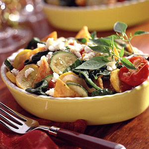
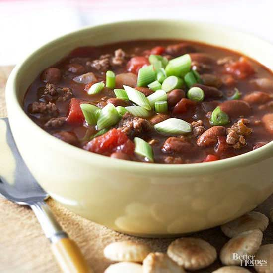

Easy Tortilla Casserole

Prep Time
Five Minutes
Cook Time
30 Minutes
Serving Size
4 to 6 Servings

- 1 medium white onion, sliced
- 1 tablespoon cooking oil
- 2 medium zucchini or other summer squash (10 ounces total), thinly sliced
- 2 cups salsa
- 2 cups chicken or vegetable broth
- 4 cups torn, stemmed spinach leaves (about 5 ounces)
- 8 ounces tortilla chips (about 8 cups, loosely packed)
- 1/2 cup finely grated Mexican queso anejo, Parmesan or Romano cheese (2 ounces)
In-Your-Sleep Chili

Prep Time
15 Minutes
Cook Time
4 to 6 hours
Serving Size
6 Servings
- 1 pound ground beef
- 1 large onion, chopped
- 2 15 ounce cans chili beans in chili gravy
- 1 14 1/2 ounce can diced tomatoes and green chiles, undrained
- 1 11 1/2 ounce can hot-style vegetable juice
- (optional) Sliced green onions, dairy sour cream, and/or shredded cheddar cheese
Smoked Turkey Quiche
Prep Time
4-5 Minutes
Bake Time
30 Minutes
Serving Size
6 to 8 Servings
- 1 unbaked 9-inch pastry shell
- 1 1/4 cups diced, cooked, smoked turkey breast (about 6 ounces)
- 1/3 cup chopped onion
- 1 tablespoon butter or margarine
- 1 -1 1/2 cups shredded Swiss cheese (4 to 6 ounces)
- 3 eggs, slightly beaten
- 1 cup half-and-half or light cream
- 1/2 teaspoon dry mustard
- 1/8 teaspoon salt
- dash of ground red pepper